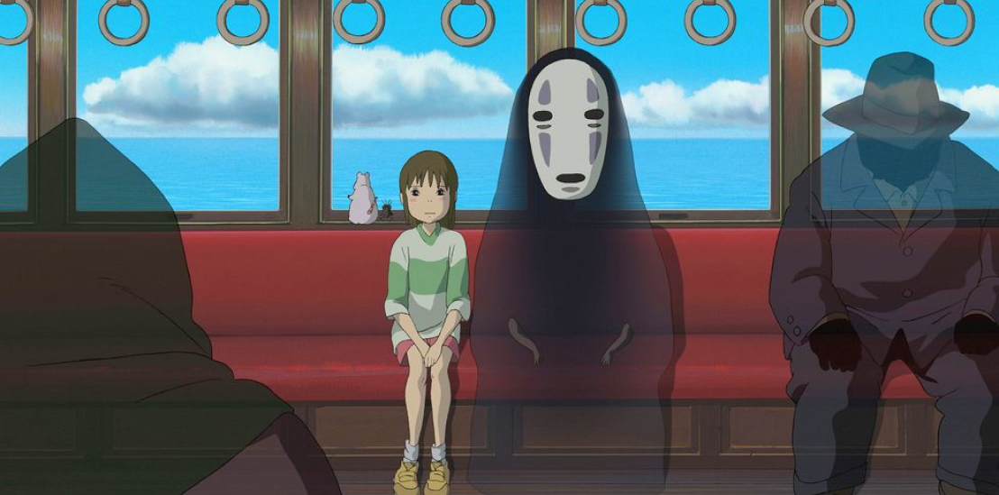
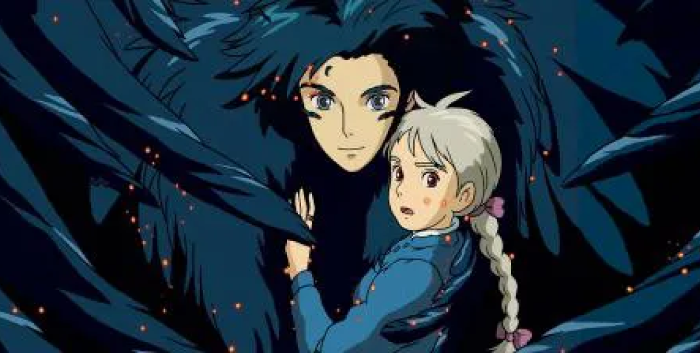

:max_bytes(150000):strip_icc()/__opt__aboutcom__coeus__resources__content_migration__serious_eats__seriouseats.com__2020__07__20200715-studio-ghibli-Ponyo_Ramen-2deccc3fadcb406db06d660885e6ac87.jpg)


MI VECINO TOTORO (1988)
Esta historia animada del director Hayao Miyazaki sigue a las estudiantes y hermanas Satsuke y Mei mientras se establecen en su casa de campo con su padre y esperan a que su madre se recupere de una enfermedad en un hospital del área.
Cuando las hermanas exploran su nueva casa, descubren y hacen amistad con unos duendes juguetones, y en el bosque cercano encuentran a una enorme criatura conocida como Totoro.
KIKI : ENTREGAS A DOMICILIO (1989)
EL VIAJE DE CHIHIRO (2001)
El filme cuenta la historia de una niña de doce años llamada Chihiro, quien durante una mudanza se ve atrapada en un mundo mágico y sobrenatural, teniendo como misión buscar su libertad y la de sus padres, y así poder regresar a su mundo.
PELÍCULA GANADORA DEL OSCAR EN EL AÑO 2002
EL INCREÍBLE CASTILLO VAGABUNDO (2004)
Tras recibir una maldición de la Bruja del Páramo que la ha convertido en una anciana, la joven Sophie decide dejarlo todo para embarcarse en un peligroso viaje con el objetivo de encontrarse con el poderoso mago llamado Howl, quien vive en su Castillo Ambulante, y pedirle ayuda.
" Creo en el poder de una historia. Creo que las historias tienen un papel importante que cumplir en la formación de los seres humanos; que pueden estimular, asombrar e inspirar a quienes las escuchan."
" Para hacer crecer tu audiencia, debes traicionar sus expectativas. "
" Los humanos tienen tanto la urgencia de crear como de destruir. "
"Me he vuelto escéptico sobre la regla no escrita de que porque un chico y una chica aparecen en la misma película, debe nacer un romance.
Quiero mostrar una relación diferente, donde los dos se inspiran mutuamente para vivir. Si soy capaz, entonces quizás estoy más cerca de mostrar una expresión verdadera de amor."
"La lógica es usar la parte frontal del cerebro, eso es todo. Pero no puedes hacer una película con lógica. O si lo miras de otra forma, todo el mundo puede hacer una película con lógica. Pero mi forma es no usar la lógica."